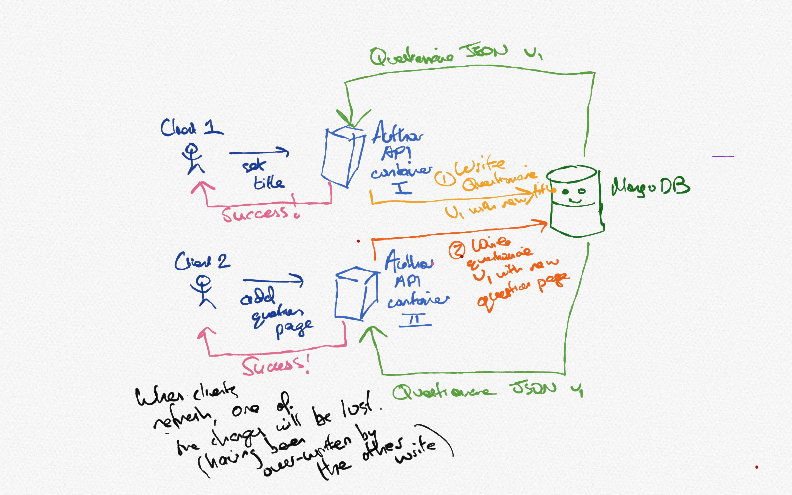
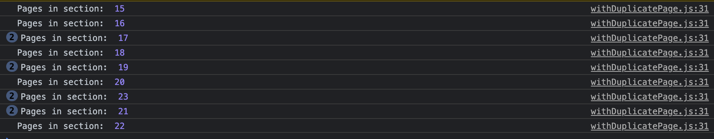
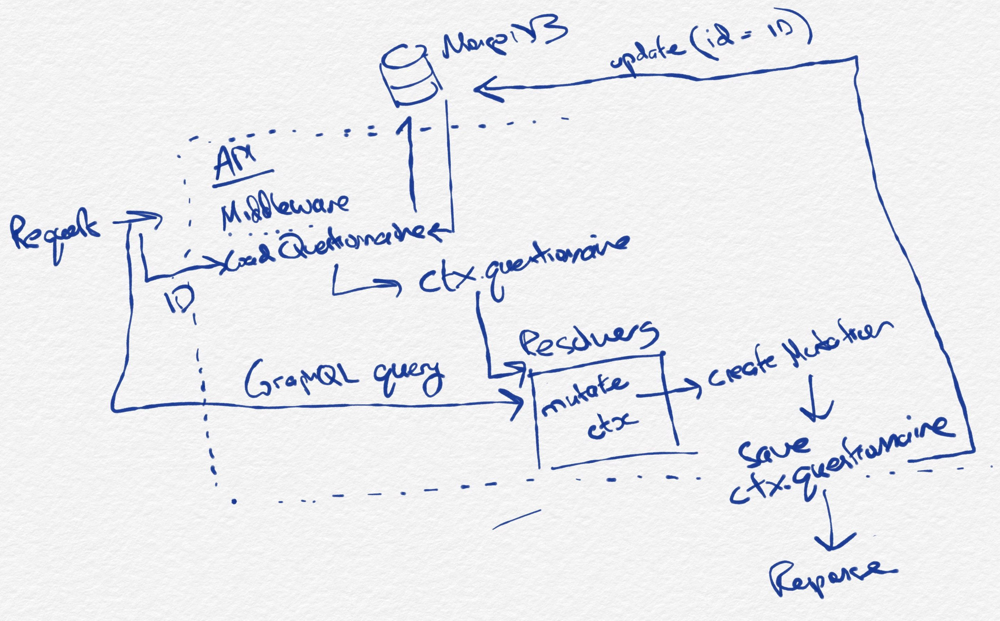
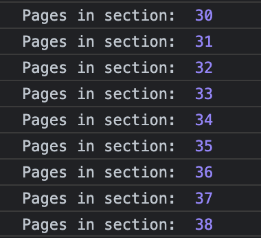

Race conditions in Author API
Table of Contents
1 The problem
Since Author stores questionnaires as standalone JSON documents (and MongoDB reads and writes these atomically) concurrent updates to the same questionnaire have a risk of being lost.

Figure 1: The current state of affairs. MongoDB smiles on as writes disappear into the æther.
In Figure 1, two clients concurrently (i.e. unaware of the other’s actions) make two seemingly unrelated changes to the same questionnaire. Client 1 wants to change the questionnaire’s title; Client 2 wants to add a new question page.
Their requests are routed to two separate API containers - but this could also occur with two concurrent requests to the same container since NodeJS will start executing the second request while the first is blocked, waiting for IO. If you spam graphql calls, especially on large questionnaires, you can see this issue in action despite having very low network latency and a single server instance.
1.1 Local reproduction
Here’s a quick and dirty way to show it in action.
withDuplicatePage.js:26 was modified so that
it prints out the current section’s page count when a
page is duplicated:
return mutate({ variables: { input }, }) .then(get("data.duplicatePage")) .then((data) => { console.log("Pages in section: ", countPagesInSection(data.section)); return data; }) .then(tap(redirectToNewPage(ownProps)));
I then hit the “Duplicate” button like a madman. Here’s the result:

Figure 2: Le console after rapid duplication
We expect a monotonically increasing amount of pages - but as can be seen, sometimes the page count is unchanged and sometimes even goes down as later responses come through to the client. Only a few of the actual duplicate requests have made their mark on the questionnaire itself, having been overwritten by other concurrent attempts at duplication.
2 Solutions
The general problem is this: we read data and may later change it - but when we do, we do not know if the original data has been changed. If it has, the foreign changes will be completely lost.
To solve this, we have to rely on some flavour of locking 1.
2.1 Transactions
In traditional relational databases, locking is done
for you by the database engine via transactions - either
explicitly through the use of SELECT ... FOR
UPDATE2 or through cranking up
the isolation level3 and leaving it to
the database vendors to figure out.
2.1.1 MongoDB
MongoDB does have some support for transactions 4 although the focus is on their use when writes span multiple documents. Starting a transaction requires initiating a client session and providing a async function which serves as the transaction body; exceptions may then be thrown and caught if the transaction fails.
The property of MongoDB’s transactions relevant for
this use case is that when another write occurs to an
object read as part of a transaction, the transaction
will be made to fail and a writeConflict
exception thrown - see e.g.
here for more details.
This could then be caught by the API server and the request re-processed as necessary.
2.2 Optimistic locking
An alternative approach to using transactions is to
manually implement a form of optimistic
locking5 by modifying the query of
MongoDB’s update function (which would be
called in e.g. saveQuestionnaire in Author).
Instead of querying just for the questionnaire ID, we add
a new unique ID which changes between saves - either a
UUID or a monotonically increasing integer.
This
stack overflow answer details the technique. If the
“losing” container / nodeJS task tries to update a
questionnaire which has changed, this new unique ID will
have been changed as part of the foreign write, the
update query will no longer match any
documents and nothing will be written.
The application can then query to see if the write was successful - if not, it knows it needs to retry.
Such an approach is mentioned briefly on the MongoDB docs concerning concurrency control:
Another approach is to specify the expected current value of a field in the query predicate for the write operations. – Atomicity and Transactions — MongoDB Manual
3 Application to Author
Any solution applied to Author will need to take into consideration current patterns within Author API - or at least weigh up the developer time and cost of refactoring existing code (unless beneficial for other features down the line) versus getting something which works and requires minimal other changes.
To help decide, first we have a quick recap of Author’s current data flow and then consider the changes which would be required to implement transactions or “manual” optimistic locking.
3.1 Current API data architecture
The following is a rough sketch of how things currently work (generally) in Author API.

Figure 3: Current data architecture for Author API, as regards modifying questionnaires
The flow is as follows:
- The
loadQuestionnairemiddleware uses thequestionnaireIdheader passed in with each request to identify the active questionnaire loadQuestionnairefetches the questionnaire from MongoDB and stores it in thectxaccessible to all GraphQL resolvers- GraphQL queries are parsed by Apollo server and
trigger execution of all relevant resolvers. Resolvers
pull data out of
ctx.questionnaireto find what they need - Mutations mutate
ctx.questionnairein place and use a helper function,createMutation, which takes care of the business of saving the questionnaire createMutationsaves the questionnaire to MongoDB by updating the document with IDctx.questionnaire.idand replacing it with the contents ofctx.questionnaire- A response is sent to the client by Apollo server based on the resolvers’ return values
3.2 Option 1: Adding transactions
Using MongoDB transactions would require both reading and writing the questionnaire as part of one transaction.
Since at present these two stages are decoupled - the
reading happens in the express middleware function
loadQuestionnaire while the writing
happens in the Apollo server then mutation-triggered
createMutation function - this represent a
change compared to the current approach.
3.2.1 Transactions inside mutation resolvers
Mutations would have to start a transaction, read
the questionnaire, modify the questionnaire and then
commit the transaction. Exceptions thrown by the
transaction could be caught and the mutation
re-attempted, e.g. by simply re-running the entire
function body. There would be no more mutation of
ctx.questionnaire since the data fetching
would have to happen as part of the mutation’s
lifetime.
3.2.2 Transactions as part of
createMutation wrapper
Transactions could potentially be incorporated into
createMutation by having
createMutation load the questionnaire, pop
it into ctx, call the custom mutation
code, save the questionnaire and then end the
transaction. Potentially errors could be handled inside
createMutation in a similar way too - the
entire thing could be repeated if the transaction fails
to commit. Custom callbacks passed to
createMutation would need to be
idempotent6 given any particular
ctx.questionnaire, which is likely (?)
already the case.
As part of the spike, I had a quick go at enabling
transactions by making createMutation use
a new wrapper function wrapping questionnaire access in
a transaction:
const withQuestionnaireTransaction = async (questionnaireId, fn) => { const session = client.startSession(); try { return await session.withTransaction(async () => { const questionnaire = await getQuestionnaire(questionnaireId, session); await fn(questionnaire, session); }, transactionOptions); } catch (e) { console.log("TRANSACTION FAILED"); } finally { await session.endSession(); } };
The wrapper provides a fresh copy of the
questionnaire and a session variable to
pass into calls you wish to be part of the
transaction.
This quickly ran into the error reported
elsewhere7 - ERROR
(MongoError): Unable to get latest version of
questionnaire with ID:
80bac2f3-56aa-4c5d-9033-be65ff1b65e3 which
occurs when MongoDB isn’t running as a replica set. Our
development MongoDB instance is run as a standalone
server, ruling this out without switching to a replica
set instead. This would take a bit more investigation
to see how long it’d take to get working - there are
some resources8 around which might
simplify it.
Testing on our staging AWS Documentdb, however, was a resounding success! With an ssh tunnel allowing access to DocumentDB, I wired up my local dev server to use the DocumentDB server as its database. Spamming duplicate like a madman now results in a pleasingly monotonically increasing amount of pages in the section!

I used createMutation to handle the
retry logic when a transaction failed and used the
above withQuestionnaireTransaction code to
perform the actual transaction passed in via
fn, which has the advantage of allowing
most of our mutation code to remain unchanged. Note
that saveQuestionnaire and
getQuestionnaire were modified to accept
an optional session parameter for passing
to the internal MongoDB calls (for association of the
calls with the transaction).
const questionnaireId = ctx.questionnaire.id; let result, transactionSuccessful; for ( let retryCount = 0; retryCount < MAX_RETRIES && !transactionSuccessful; retryCount++ ) { transactionSuccessful = await withQuestionnaireTransaction( questionnaireId, async (questionnaire, session) => { ctx.questionnaire = questionnaire; result = await mutation(root, args, ctx); if (ctx.questionnaire.publishStatus === PUBLISHED) { ctx.questionnaire.publishStatus = UNPUBLISHED; ctx.questionnaire.surveyVersion++; hasBeenUnpublished = true; await createHistoryEvent( ctx.questionnaire.id, publishStatusEvent(ctx) ); } await saveQuestionnaire(ctx.questionnaire, session); } ); } if (!transactionSuccessful) { throw new Error( `Failed to commit transaction after ${MAX_RETRIES} retries.` ); }
createMutation therefore attempts to
apply the mutation at most MAX_RETRIES
times before giving up with an exception.
Note that we have to re-fetch the questionnaire as
part of createMutation in order for
MongoDB to associate that read with the on-going
transaction. This is inefficient since we already read
it in the middleware (via
loadQuestionnaire) - this could be
remedied by e.g. lazily fetching the ctx.questionnaire
as part of loadQuestionnaire instead of
always fetching it, since mutations using this new
approach will not utilise that read (but resolvers
still would).
The only downside to this at the moment is that it does not work using a standalone MongoDB instance, as used in the local dev environment. Work would need to be done to enable the local service to run as a replica set.
3.3 Option 2: Using DIY optimistic locking
DIY optimistic locking - implementing compare and set9 by taking advantage of MongoDB’s ability to query and update documents in one step (and querying on an ID which changes with every write - hereafter the CAS ID) - is another approach which sidesteps the need to use the transactions API, provided we only need to care about one document at a time.
In Author, however, we have to deal with two objects
on each save - those taken from the
questionnaires and those from the
versions collection.
The questionnaires collection provides
metadata about the questionnaire; each object within is a
slimmed-down version of the current state of the
questionnaire (which is stored as the latest object in
versions with the same ID).
At present, when any change is made to the
questionnaire, a new version object is inserted into the
versions collection corresponding to the
change. Since this collection always gets appended to
rather than having its documents modified we would have
to use a “compare and set ID” in a different place - such
as on the questionnaires metadata object for
the questionnaire.
This poses a problem because without multi-document
transactions (which we were hoping to sidestep if we went
down this route), it is possible that the CAS ID could be
updated on the questionnaires object and a
new change concurrently inserted into the
versions collection by a foreign write. The
technique only works if you can atomically update
the document AND check the CAS ID remains unchanged,
which we cannot do between two documents without using
multi-document transactions.
We could keep track of which questionnaires are
active by using only the versions collection
and doing away with questionnaires, ensuring
a single document atomic commit. But this is still
probably less preferable than using native MongoDB
transactions.
4 Further steps
During this spike, transactions were successfully implemented - albeit when using a remote DocumentDB cluster. Using transactions solved the initial problem of lost writes as demonstrated using the page duplication example, hopefully serving as a generic solution (relevant to e.g. the “duplicate page bug” ticket and “answer labels disappearing” ticket10 in the backlog) for race conditions in Author’s DB usage.
DIY optimistic locking was considered but would require changes to how we use our collections so that all questionnaire data is saved atomically - not necessary if transactions can be made to work.
Once working on the dev environment further work would
be needed to add relevant tests and ensure all existing
mutations continue to work. Some mutations, e.g.
lockQuestionnaire would need to be updated
manually to use the new
withQuestionnaireTransaction interface as they
intentionally bypass createMutation.
Footnotes:
Locking reads in MySQL - https://dev.mysql.com/doc/refman/8.0/en/innodb-locking-reads.html
Transaction isolation levels in PostgreSQL - https://www.postgresql.org/docs/9.5/transaction-iso.html
MongoDB documentation: Transactions - https://docs.mongodb.com/manual/core/transactions/
Optimistic locking involves writing changes “optimistically” - i.e. assuming that they will succeed (“pessimistic” locking would be to take an exclusive lock over the entire row / object in advance) and then checking to see if any conflicts have ocurred after the fact and rolling back. MongoDB’s transactions themselves use an optimistic model where writes proceed but are interrupted and reset if it detects another concurrent (foreign) write. See e.g. https://en.wikipedia.org/wiki/Optimistic_concurrency_control
MongoDB needs to be running as a replica set in order to allow transactions - https://stackoverflow.com/questions/62343611/enabling-mongodb-transactions-without-replica-sets-or-with-least-possible-config
Zero config MongoDB replica set runner - http://thecodebarbarian.com/introducing-run-rs-zero-config-mongodb-runner
Compare and set - https://en.wikipedia.org/wiki/Compare-and-swap
Bug ticket - answer labels disappearing: https://collaborate2.ons.gov.uk/jira/browse/EAR-556